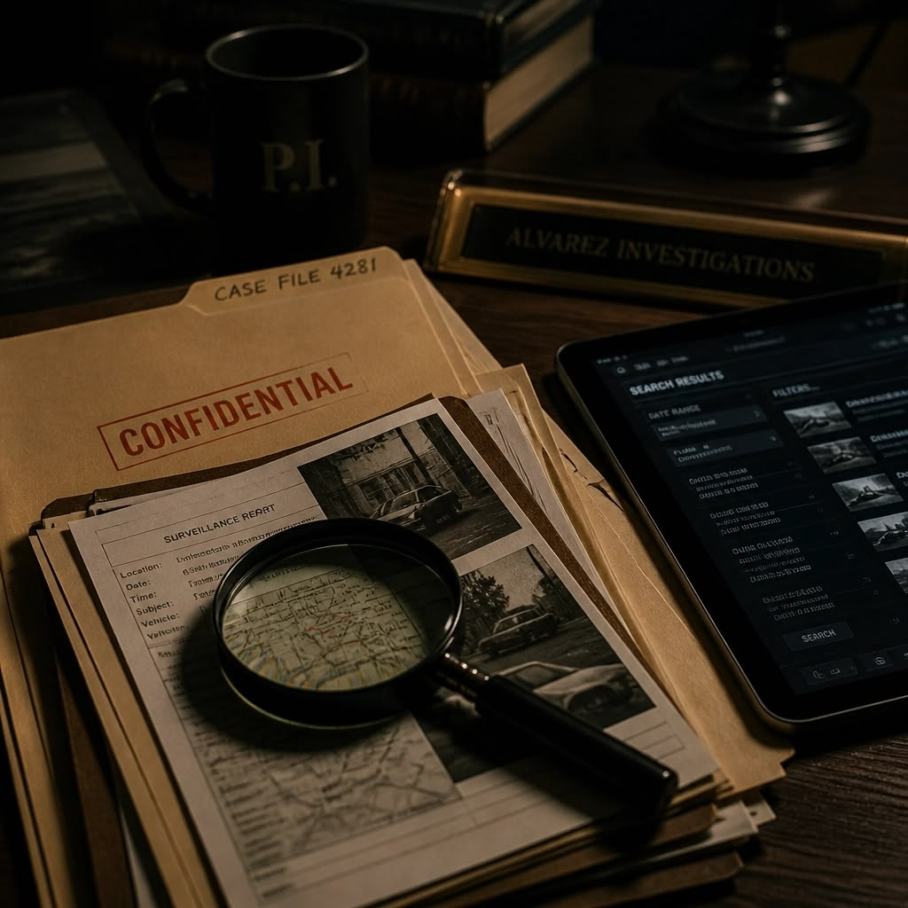

Quem somos
O Bureau Detalhe é uma agência fictícia inspirada na série O Mentalista, onde a observação e o mentalismo ajudam a resolver casos. Aqui, o que normalmente passa despercebido vira pista.
Conheça a equipeComo investigamos
- ObservarOlhamos o que todos veem, mas poucos notam.
- PerguntarBoas perguntas revelam contradições.
- ConectarJuntamos as pistas para montar o quadro.
- ConcluirEntregamos um relatório claro e ético.